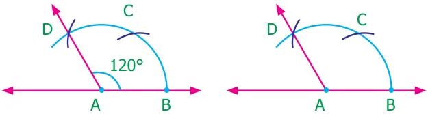
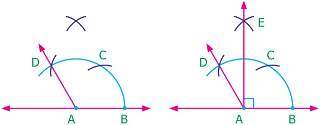
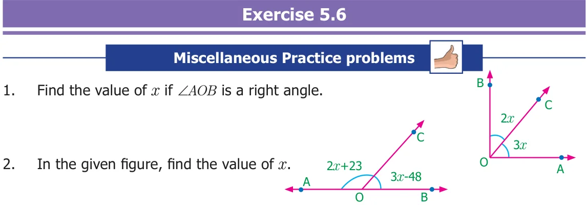
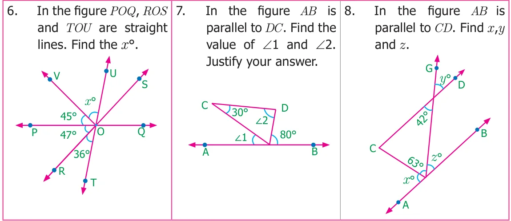
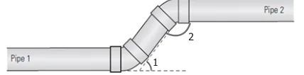
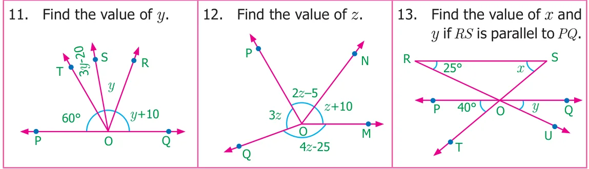
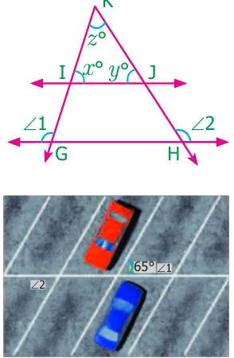
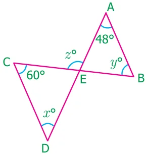

- Construction of angle of measure \(90 ^{\circ}\)
Step 1: Construct angle \(120 ^{\circ}\) [Refer Construction of angle of measure \(120 ^{\circ}\) (ii)].

Step 2: With C as center, draw an arc of convenient radius in the interior of \(\angle CAD\).

Step 3: With the same radius and D as center, draw an arc to cut drawn in step 3 at E.
Step 4: Join AE. Then \(\angle BAD = 90 ^{\circ}\) is the required angle
- Construct the following angles using ruler and compass only.
- \(60 ^{\circ}\) (ii) \(120 ^{\circ}\) (iii) \(30 ^{\circ}\) (iv) \(90 ^{\circ}\)
- \(45 ^{\circ}\) (vi) \(150 ^{\circ}\) (vii) \(135 ^{\circ}\)

3x+40 C
- Find the value of x, y and z
+30
- Two angles are in the ratio 11: 25. If they are linear pair, find the angles.
- Using the figure, answer the following questions and justify your answer.
- Is \(\angle 1\) adjacent to \(\angle 2\)?

- Is \(\angle AOB\) adjacent to \(\angle BOE\)?
- Does \(\angle BOC\) and \(\angle BOD\) form a linear pair?
- Are the angles \(\angle COD\) and \(\angle BOD\) supplementary?
- Is \(\angle 3\) vertically opposite to \(\angle 1\)?

- Draw two parallel lines and a transversal. Mark two alternate interior angles G and
H. If they are supplementary, what is the measure of each angle?

- A plumber must install pipe 2 parallel to pipe 1. He
knows that \(\angle 1\) is 53. What is the measure of \(\angle 2\)?
Challenge Problems

- Two parallel lines are cut by a transversal. For each pair of interior angles on the
same side of the transversal, if one angle exceeds the twice of the other angle by \(48 ^{\circ}\) . Find the angles.

- In the figure, the lines GH and IJ are parallel. If \(\angle 1=108 ^{\circ}\) and \(\angle 2 = 123 ^{\circ}\) , find the value of x, y and z.
- In the parking lot shown, the lines that mark the width of each space are parallel. If \(\angle 1 =\) (x \(+39) ^{\circ}\) , \(\angle 2 = (2x - 3y) ^{\circ}\) , find x and y.
- Draw two parallel lines and a transversal. Mark two
corresponding angles A and B. If \(\angle A = 4x\) and \(\angle B = 3x + 7\), find the value of x. Explain..

- In the figure AB is parallel to CD. Find x˚, y˚ and z˚.
- Two parallel lines are cut by a transversal. If one angle of a pair of corresponding angles can be represented by 42˚ less than three times the other. Find the corresponding angles.
- In the given figure, \(\angle 8 =\) 107˚, what is the sum of the \(\angle 2 ^{7}\)
and \(\angle 4\)? \(^{5} ^{3}\)